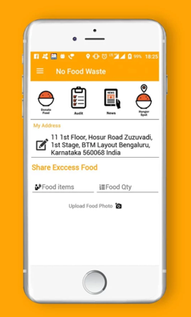

The topic I wanted to focus on was the issue of food waste or increasing the accessibility to food for people who are not able to do so. While this issue may not traditionally fall under the topic of diversity, I believe that it contributes to the lack of diversity in who has access to food – a basic human need. Even though there is enough food produced in the world to end hunger, nearly 1/3 of this food is wasted with hunger prevalent even in first world countries. Therefore, my current idea is to build an app/system that would enable people to take food that would be wasted to people who need that food. There are a number of apps that try to cater to the problem of food waste or increasing access to food, but most are not widely used. The problem is that people/businesses who possess the food that would be wasted need an incentive to donate this food, they are often not willing to put in work that does not directly benefit them. There are two distinct apps that I discovered that provided different solutions to this problem. The first one was developed in the United States and is called LeftoverSwap.
LeftoverSwap is designed for the average person living in a first world country. The app’s mission statement says, “Help save the world while enjoying food by fixing these pressing issues: 40% of the food goes to waste, 25% of us don’t know a single neighbor’s name, 16% of us lack enough food for a healthy lifestyle, 99% of us don’t need a second helping of fettuccine alfredo (Greased Watermelon, LLC).” It poses a way of combating food waste that is social and that tries to draw in new users with the possibility of free food. As this app is not in the Apple Store, I didn’t get a chance to interact with it directly but it seems to have garnered between 5000-10000 downloads on the GooglePlay Store. From the given layouts, the main interface of the application is a map that shows where food that is not needed is located. The user would then be allowed to contact the person who posted that particular item or directly pick it up. While this app is conceptually interesting, it falls short due to multiple factors – the primary one being a lack of users. Without enough users, the community of food sharing cannot be established as the few people who do use it do not have enough incentives. Reviews for the app mention this problem stating that “closest posts were hundreds of miles away (Merrell).” Along with this, another user pain point is the fact that there is no alert system within the app to alert users to new food postings or mark a food as “given away.” Upon more in-depth analysis, the reason that this application might not have enough users is that people might be hesitant to take leftover food from an unknown person. However, a solution to this problem may be to implement a review system.
Leftover Swap (GooglePlay)
The other app that I discovered is called NoFoodWaste. The NoFoodWaste app is a product of “No Food Waste, a registered nonprofit that provides a mobile based solution allowing excess food to be donated from the food service industry to qualified charities that work with the needy (Boomit Solutions).” NoFoodWaste has a clean interface where food providers can either drop off the food themselves to a charity nearby or they can simply upload a photo of the food and tag their address, and volunteers from the non-profit will come pick up the food, check for quality and then deliver the food to a charity in need. This app also addresses many of the problems that are present in LeftoverSwap and consequently has a larger and more consistent impact on the problem of food accessibility. The first advantage is the fact that the app no longer depends on individual users but rather larger businesses that a larger quantity of food waste much more frequently than the average person. The application is also much more successful due to the elimination of a need to have a direct pipeline from the surplus to the deficit. Instead the non-profit functions as a facilitator and both transports and quality-checks the food. This inclusion of the middleman reduces the amount of work on both the food giver and the food receiver, thereby efficiently transporting food to areas of need vs. in Leftover Swap where the majority of users were probably not affected by a lack of food accessibility. Another interesting reason as to NoFoodWaste’s success is the fact that it may be due to its primary location in India. Food regulations are much laxer in India and therefore the creators would not have to worry about liability issues regarding the consequences if a person who has consumed donated food became ill as a result.

NoFoodWaste (GooglePlay)